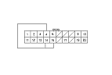

Ricerca guasti circuito linea di comunicazione climatizzatore/navigatore
Attivare il sistema di comando climatizzatore in diverse modalità.
Il climatizzatore funziona correttamente?
SÌ
-
Passare a
Punto 2
.
NO
-
Eseguire la
procedura di autodiagnosi con il tester HDS
o
con la centralina del climatizzatore.
■
Eseguire il collegamento del navigatore.
L'icona del climatizzatore è rossa?
SÌ
-
Passare a
Punto 3
.
NO
-
Passare a
Punto 9
.
Portare il commutatore di accensione su OFF.
Scollegare il connettore A (20P) della centralina del navigatore.
Scollegare il connettore 32P della centralina del climatizzatore.
Controllare la continuità tra i seguenti terminali del connettore 32P del climatizzatore e del connettore A (20P) del navigatore.
32P:
20P:
N. 5
N. 4
N. 6
N. 14
N. 21
N. 15
C'è continuità?
SÌ
-
Passare a
Punto 7
.
NO
-
Riparare l'interruzione nei fili tra la centralina del climatizzatore e il navigatore.■
Controllare separatamente la continuità tra la massa e i terminali N. 4, N. 14 e N. 15 del connettore A (20P) del navigatore.
C'è continuità?
SÌ
-
Riparare il cortocircuito verso massa nei fili tra la centralina del climatizzatore e il navigatore.■
NO
-
Passare a
Punto 8
.
Ricollegare il connettore 32P della centralina del climatizzatore.
Scollegare il connettore A (20P) della centralina del navigatore.
Collegare i terminali N. 4, N. 14 e N. 15 del connettore A (20P) del navigatore con un ponticello.
Portare il commutatore di accensione su ON (II).
Premere i pulsanti di comando ricircolo e OFF.
La spia di comando del ricircolo si accende?
SÌ
-
Eseguire il controllo dell'impianto con il navigatore.
■
NO
-
Sostituire la centralina del climatizzatore con una funzionante e ricontrollare. Se il sintomo/indicazione scompare, sostituire la centralina del climatizzatore originale.■
